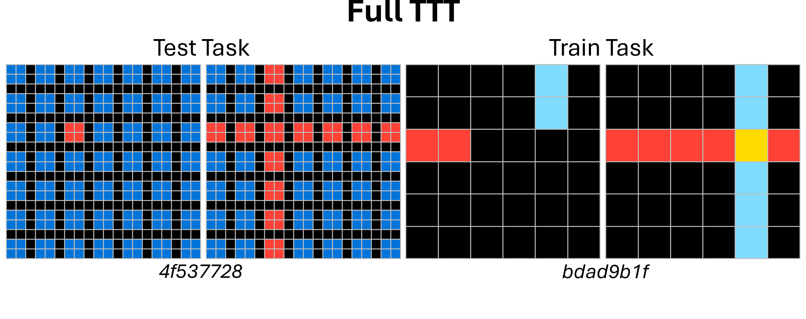
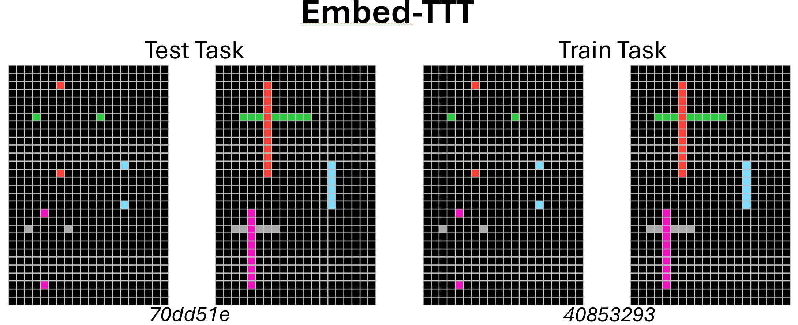
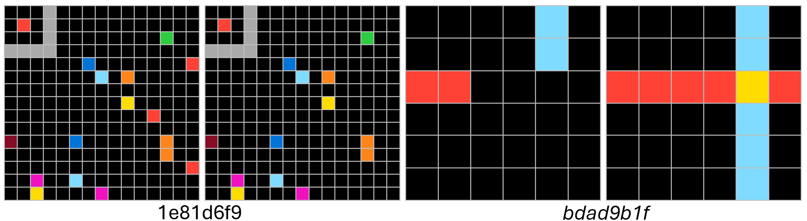
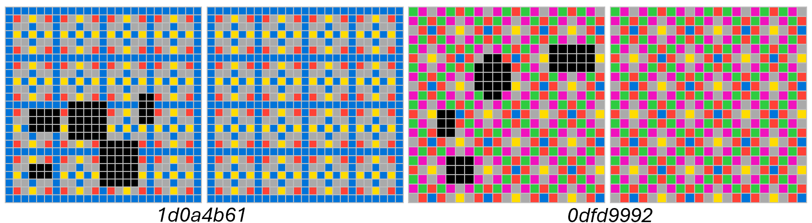

Does an ARC success mean the model found the rule or a shortcut? Splitting test-time training so the task embedding learns first produces embeddings that match underlying rules, retrieve better, and linearly reveal known rules.
ARC-style benchmarks reward right answers without showing whether the model induced the intended transformation or leaned on a shortcut — the embedding is where that distinction can be read.
Step one tunes only the task embedding; step two freezes it and tunes the backbone. The embedding step touches less than a hundredth of a percent of parameters yet carries the rule.
Better final scores than joint training, closer rule alignment, stronger retrieval, accurate linear probes — and the frozen-embedding stage alone already cracks a non-trivial share of tasks.




Source table · Our embedfullTTT allows to reach better final per-task performances than default (5 rows)
| Train dataset | Test dataset | Full | Embed | Embed-Full | Full | Embed | Embed-Full |
|---|---|---|---|---|---|---|---|
| ARC-1 train | ARC-1 test | 48.8% | 13.0% | 49.5% | 53.8% | 17.2% | 55.2% |
| ARC-1 train | ConceptARC | 23.8% | 8.8% | 28.1% | 32.5% | 14.4% | 37.5% |
| ARC-1 train | Mini-ARC | 59.7% | 22.2% | 63.8% | 62.4% | 34.9% | 71.1% |
| 2pt 2pt ARC-1 train | ConceptARC (*) | 47.1% | 24.0% | 49.8% | 53.8% | 33.3% | 57.1% |
| Concept retrieval in ARC | ConceptARC (*) | Top-1: Test 36.3% (29/80), Train 35.0% (28/80), from |
Abstract
The Abstraction and Reasoning Corpus and related benchmarks evaluate whether AI models can solve novel reasoning tasks, but often leave unclear whether success reflects inference of the intended underlying rule or reliance on shortcuts. We address this gap by studying test-time task embeddings in Vision ARC (VARC), a model in which a pre-trained backbone is complemented by a trainable embedding representing the transformation rule. In the original VARC, test-time training (TTT) is jointly applied to the backbone and task embedding. Here we introduce a novel two-step TTT protocol: first finetune only the task embedding (Embed-TTT), then freeze it and finetune the backbone. Across ARC-AGI-1, ConceptARC, and two controlled datasets with known rules, Embed-TTT consistently yields improved task embeddings, ones that align better with underlying task rules, improve embedding-based retrieval, and enable accurate linear probing of known rules. Qualitatively, Embed-TTT identifies more semantically meaningful relations between test and train tasks on ARC-AGI-1. We also show that optimizing only task embeddings (less than 0.01% of model parameters) already solves a non-trivial fraction of ARC-AGI-1, ConceptARC, and Mini-ARC tasks, while the full two-step pipeline improves final performance. Finally, we show that Embed-TTT recovers the underlying geometric structure of parametric rules and learns compositional capabilities that enable rule-wise interpolation, but not extrapolation. These findings support a clearer separation between rule induction and rule execution in ARC-like evaluations, motivating benchmarks that better distinguish in-distribution from out-of-distribution rules.